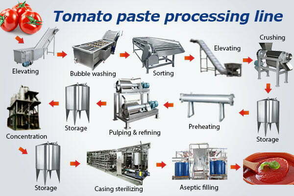

How Does a Tomato Paste Production Line Work? Complete Industrial Process from Fresh Tomato to Finished Product

Summary
This article explains the complete industrial tomato paste production process, from fresh tomato receiving to washing, crushing, sterilization, filling, packaging, and automated warehouse storage.
It is designed for food manufacturers, investors, and factory planners who want to build or upgrade a fully automated tomato processing plant with stable output, high hygiene standards, and scalable production capacity.
Technology
- Industrial food processing system
- Automated washing and sorting system
- Tomato crushing and pulping technology
- Vacuum evaporation concentration system
- Continuous sterilization system
- Aseptic filling technology
- Automatic sealing and packaging line
- Weight inspection and quality control system
- PLC / SCADA industrial control system
- MES food production management system
- ASRS automated warehouse integration system
Challenge
Traditional tomato processing factories face major production challenges:
High dependence on manual labor in raw material handling
Inconsistent product quality due to unstable processing conditions
Food safety risks in non-automated environments
Inefficient sterilization and thermal control systems
Low production continuity and frequent bottlenecks
Limited packaging automation and logistics integration
Difficult scalability for large-scale production
These issues directly impact food safety compliance, production efficiency, and profitability.
Solution
A fully automated tomato paste production line solves these challenges through:
Continuous end-to-end processing system
Automated washing, sorting, and pulping
Controlled evaporation and concentration process
Sterilization and aseptic filling technology
Fully automated packaging and labeling line
Real-time quality inspection system
Robotic palletizing and handling system
ASRS automated warehouse integration
This creates a stable, hygienic, and scalable food manufacturing system.
Workflow & Layout
Fresh tomato receiving and unloading system
Automated washing and cleaning system
Sorting system removes defective tomatoes
Crushing and pulping system extracts juice
Separation system removes seeds and skin
Evaporation system concentrates tomato paste
Sterilization system ensures food safety compliance
Aseptic filling system fills cans or bottles
Sealing and cooling system stabilizes product
Labeling and coding system completes packaging
Cartoning and palletizing system organizes shipment
ASRS warehouse system stores finished goods
Results & ROI
- Production efficiency increased significantly (continuous 24/7 operation)
- Labor cost reduced across entire production chain
- Food safety and hygiene compliance improved
- Product consistency stabilized across batches
- Packaging accuracy and speed improved
- Warehouse logistics fully automated with ASRS
- Reduced contamination risk in production environment
- Faster return on investment (ROI typically 18–30 months)
Equipment List
- Tomato washing and sorting system
- Crushing and pulping machine
- Pulp separation system
- Vacuum evaporation concentration system
- Sterilization and thermal control system
- Aseptic filling machine
- Automatic sealing machine
- Cooling conveyor system
- Labeling and coding system
- Quality inspection system
- Cartoning and palletizing robots
- ASRS automated warehouse system
Project Overview / Opening
A tomato paste production line is a fully integrated industrial food manufacturing system that transforms fresh tomatoes into finished packaged products through continuous automated processing.
This system combines food engineering, automation technology, and smart logistics to achieve high-efficiency industrial production.
Key Points
- Full-process automation from raw material to warehouse
- Strict hygiene and food safety control design
- Continuous production with stable output
- Integrated sterilization and aseptic filling system
- High scalability for large food factories
- Reduced labor dependency across production stages
- Seamless integration with ASRS warehouse systems
Implementation / Workflow
Implementation of a tomato processing plant includes:
Production capacity and product planning
Process flow design (end-to-end system mapping)
Equipment selection and configuration
Food safety and hygiene compliance design
Automation system integration (PLC/MES/SCADA)
Packaging and labeling system setup
Warehouse (ASRS) integration planning
System testing and commissioning
Customer Value / Results
This system delivers strong commercial and industrial value:
Higher production capacity with stable output
Lower operational and labor costs
Improved food safety and compliance
Scalable industrial production system
Reduced waste and production losses
Fully automated packaging and logistics
Strong ROI for food manufacturing investment
Long-term competitiveness in global food markets
Conclusion / Next Step
A modern tomato paste production line is not just a processing line—it is a fully integrated food manufacturing ecosystem combining production, packaging, and intelligent warehouse logistics.
If you are planning a food factory project or upgrading an existing plant, we can support you with:
Turnkey food production line design
Automation system engineering
ASRS warehouse integration
Cost estimation and ROI analysis
Full project execution support
SEO Title
How Does a Tomato Paste Production Line Work? Complete Industrial Process from Fresh Tomato to Finished Product
SEO Description
This article explains the complete industrial tomato paste production process, from fresh tomato receiving to washing, crushing, sterilization, filling, packaging, and automated warehouse storage.
It is designed for food manufacturers, investors, and factory planners who want to build or upgrade a fully automated tomato processing plant with stable output, high hygiene standards, and scalable production capacity.
Related Blog
Start with Your Business Challenge
Tell us about your warehouse, factory, or production requirements. We'll help you explore practical automation solutions and relevant project references.